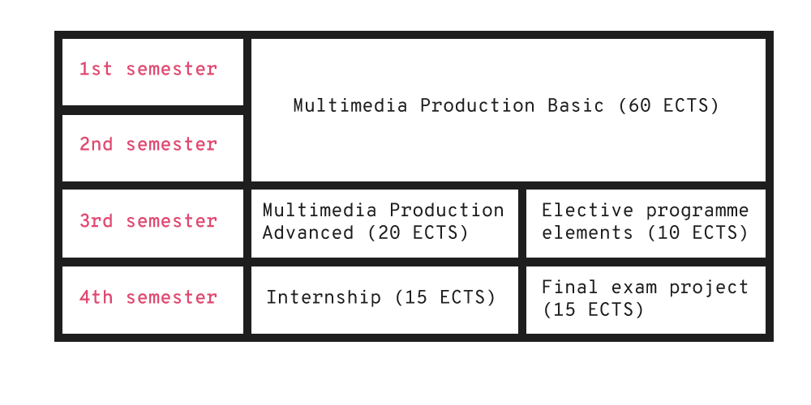

Multimedia Design and Communication
<Programme overview>
Description
The programme is a full-time programme equating to two student full-time equivalents. One student full-time equivalent corresponds to 60 ECTS credits in the European Credit Transfer System (ECTS).
Title
The programme title is Academy Profession Degree Programme in Multimedia Design and Communication.
Objectives
The objective of the programme is to provide graduates with the qualifications needed to independently design, plan, realise and manage multimedia tasks and to assist in the implementation, administration and maintenance of multimedia productions. The intended learning outcome includes acquisition of the knowledge, skills and competencies set out in the Ministerial Order on the Academy Profession Degree Programme in Multimedia Design and Communication.
Structure
The programme includes elective programme elements corresponding to 10 ECTS, which are referred to as ‘elective subjects’. The elective subjects equate to either 5 or 10 ECTS and are offered in the third semester of the programme. Elective subjects allow students to specialise within a particular academic/professional subject area. The elective subjects offered are described in an electives catalogue published at the beginning of the third semester. The catalogue includes a description of the scope, learning objectives and ECTS weighting of each elective subject.